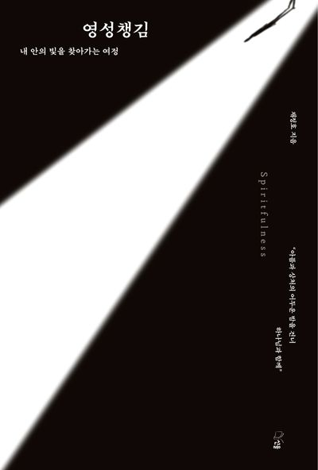

영성챙김
마음을 비우는 것을 넘어, 말씀과 하나님의 임재로 채우다. 개념과 교리만 남은 메마른 삶에 전하는 기독교적 명상과 치유의 처방전입니다.
영성챙김이란 무엇인가
이 책은 현대 정신의학 및 심리학계에서 폭발적인 인기를 얻고 있는 ‘마음챙김(Mindfulness)’의 치료적 효과를 적극적으로 수용하면서도, 한 걸음 더 나아가 기독교가 오랜 역사 속에서 보존해 온 영적 자산과 결합한 ‘영성챙김(Spiritfulness)’의 개념을 국내 최초로 정립하고 제안한 책입니다.
- 가상 토론을 통한 명쾌한 해법: “기독교인이 명상을 해도 괜찮을까?”, “사탄이 틈타지는 않을까?”라는 신앙인들의 현실적인 두려움에 대해 보수, 진보 개신교 목사, 가톨릭 사제, 심리학자 등의 가상 대화 형식을 빌려 명쾌하고 따뜻한 학문적, 종교적 답을 제시합니다.
- 기독교 전통 명상의 현대적 복원: 동양 종교의 전유물로 오해받기 쉬운 명상이 사실은 가톨릭과 개신교의 오랜 전통(관상기도 등) 속에 이미 깊이 뿌리내리고 있었음을 교회사와 신학, 그리고 정신의학적 관점에서 철저히 고증합니다.
- 일상에서 실천하는 13가지 영성챙김: 이론에 그치지 않고 ‘하나님 앞에 잠잠히 머물기’, ‘성령의 체화’, ‘생명의 호흡’, ‘주기도문 움직임’, ‘자연을 걷는 명상’ 등 일상에서 바로 활용할 수 있는 구체적인 실천법을 친절히 안내합니다.
영성챙김의 네 가지 여정
침묵 속에서 하나님 앞에 머무는 법, 말씀을 몸과 마음으로 되새기는 법, 성령의 미세한 이끄심에 귀 기울이는 법 등 오랜 기독교 관상 전통이 담겨 있으며, 네 단계를 통하여 기독인이 지향하는 명상을 하도록 안내합니다.
비우기
일상의 소음과 분주함을 내려놓고, 하나님 앞에 나아갈 자리를 마련합니다.
바라보기
자신의 몸과 마음, 그리고 말씀을 정직하게 바라보며 지금 이 자리를 알아차립니다.
머무르기
침묵 속에서 하나님의 임재 앞에 잠잠히 머물며 성령의 미세한 이끄심에 귀 기울입니다.
변혁하기
말씀과 기도, 일상의 삶을 통해 하나님과의 관계 안에서 온전함을 회복해 갑니다.
비움이 아닌 채움으로
① ‘비움’이 아닌 ‘채움’의 역설
요즘 유행하는 일반적인 명상이 자아를 비워내거나 스스로를 신격화하는 경향이 있다면, 채정호 교수의 영성챙김은 말씀과 하나님의 임재로 내면을 정직하게 채워나가는 과정입니다. 불안과 우울, 외상(트라우마)으로 고통받는 이들에게 영적인 채움과 근본적인 존재의 치유를 선사합니다.
② 종교적 경계를 허무는 통합의 치유
채정호 교수의 임상 노하우가 녹아있어, 종교를 가진 이들에게는 더 깊은 신앙의 신비(영성)를 체험하게 하고, 탈종교화 시대에 영적 갈망을 느끼는 현대인들에게는 거부감 없이 마음의 평온을 찾을 수 있는 안전한 이정표를 제공합니다.
③ 몸과 영성의 조화
책에서 제시하는 호흡과 움직임, 주기도문 수행 등은 채정호 교수가 강조해 온 바마움(바른 마음을 위한 움직임) 및 소마틱스(Somatics) 철학과 맞닿아 있습니다. 영적인 깨달음이 머리에만 머물지 않고 몸으로 체화될 때, 진정한 리질리언스(회복탄력성)가 살아남을 증명합니다.
“진료실에서 만난 수많은 신앙인이 불안과 트라우마 속에서도 명상을 하면 믿음이 흔들릴까 봐 주저하는 모습을 보며 안타까웠습니다. 명상의 핵심은 형식이 아니라 그 방향성과 중심이 어디를 향하고 있는가입니다. 영성챙김은 나를 비워내는 두려운 여정이 아닙니다. 우리 내면의 고요한 성소에서 나를 온전히 사랑하시는 절대자의 숨결을 느끼고, 그 임재하심으로 마음을 가득 채워 영혼의 어두운 밤을 건너가는 가장 안전하고 따뜻한 치유의 처방전입니다.”
채정호 교수